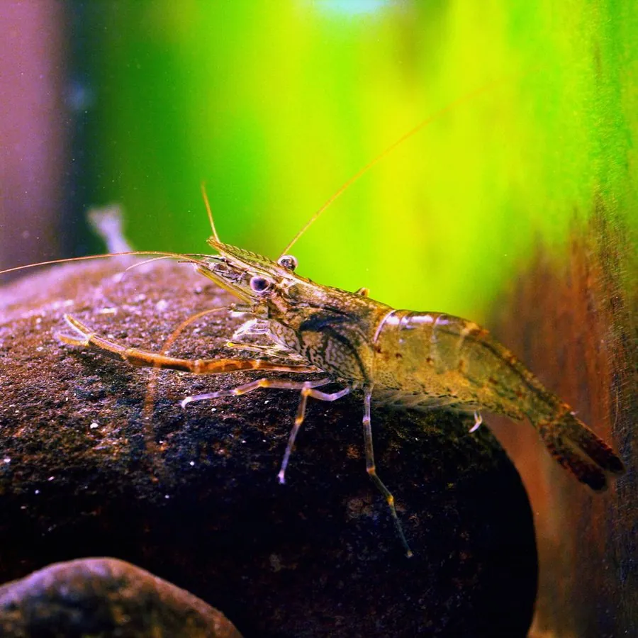

甲壳动物 · 动物界
日本沼虾 Macrobrachium nipponense

中国重要的淡水经济虾类，体色青褐，螯足细长，生活在湖泊、河流和稻田中，肉质细嫩，养殖历史悠久。
- 分类
- 门节肢动物门纲软甲纲目十足目科长臂虾科属沼虾属
- 栖息环境
- 湖泊、河流、池塘和稻田的水草区
- 地理分布
- 中国大部分地区，以及日本、朝鲜半岛
- 保护级别
- 暂无评估
物种志
日本沼虾体长约 4–8 cm，体色青褐或青绿色，体表常有深色斑点，额剑长而带齿，第二对步足细长，雄虾的螯足比雌虾更长，腹部各节颜色随环境变化。
它生活在湖泊、河流、池塘和稻田中，喜欢水草丰富的浅水区，夜间活动，杂食，取食水生昆虫、藻类、有机碎屑和小型底栖动物。日本沼虾在中国分布很广，是重要的淡水经济虾类，俗称青虾，养殖历史悠久，产量较高。雌虾抱卵孵化，幼体经多次蜕皮后成为幼虾。它肉质细嫩，是餐桌上的常见河鲜；养殖中要注意水质和水草管理，野生种群也是湿地食物网的一部分。日本沼虾对水质适应力较强，但在污染严重的水体中数量会明显减少。
形态与习性
- 食性取食水生昆虫、藻类、有机碎屑和小型底栖动物
- 体长约 4–8 cm
- 识别体色青褐，额剑长而带齿，螯足细长
- 生活史雌虾抱卵孵化，幼体多次蜕皮成长
- 经济中国重要的淡水经济虾类，俗称青虾
- 习性夜间活动，喜欢水草丰富的浅水区
趣味知识
- 日本沼虾就是市场上常见的青虾，是淡水虾里的老熟人。
- 雄虾的第二对步足比雌虾长得多。
- 它喜欢水草多的浅水区，夜间出来觅食。